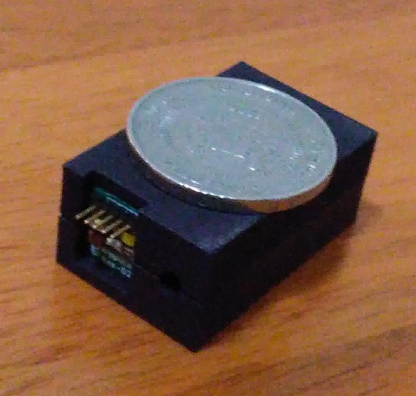

Spectrometry Modules from AIpplica Systems
Features

- Modified Fastie-Ebert design.
- Higher Order Rejection Filter.
- Low cost CMOS/CCD Photodetector.
- Detector wavelength range: 350nm - 1000nm.
- Integrated 10MHz 8 bit A/D converter.
- 300 electrons/LSB.
- USB-C Interface
- Wireless WiFi Microcontroller
- SMA 905 fibre optic input connector
- Readout Software Spectrum processing & display.
- Factory Calibrated with Standard Mercury lamp.
- Small Footprint.
- Suitable for a wide range of commercial applications: from Industrial, Bio, Pharma., F & B to Security.
- Customizable for different range, resolution and interface.
- Model "Rungeen-1901" Range 400nm - 900nm, with ~5nm resolution.
- Model "Raduga-2010" Range 450nm - 700nm, with ~3nm resolution.